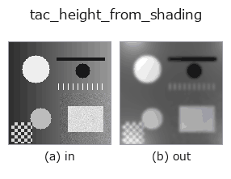

tactile op• 資料種類:image → image
• 呼叫:fullseye.apply(img, "tac_height_from_shading", a=0.5, b=0.5)(2-D 的模型是一張圖 + 兩個純量旋鈕 a,b∈[0,1])

*圖為在 128×128 合成輸入上實際執行的輸出。左為輸入，右為輸出(非影像的回傳值直接顯示其值)。*
對明暗梯度做泊松積分(Poisson integration)以求取高度/浮雕圖——這正是 GelSight 深度重建(以及光度立體視,photometric stereo)的積分階段:影像梯度被視為表面斜率 `p = gain*gx、q = gain*gy,並以頻譜方法求解泊松方程式 lap(h) = div(p,q),即 h_hat = div_hat / lap_hat,其中離散拉普拉斯運算子的符號為 2cos(2*pi*u/W)+2cos(2*pi*v/H)-4,(不確定的)直流(DC)分量固定為零。a = 梯度增益(0.25~4.25 倍),b` = 梯度場的預先平滑 sigma(0~3)。輸出經最小-最大正規化到 [0,1] 並重新調整回 HxW;常數輸入積分後會得到平坦(全零)的浮雕。
• 範例資料目錄(下載 URL / 授權) —— 2-D 用 skimage.data(BSD/公有領域)加合成圖,3-D 給出真實資料源(Stanford/PDS 等)的下載 URL。
• 運算子來歷與參考文獻 —— 該運算子族所依據的研究/方法出處。
下面的程式已確認可以執行(與圖相同的輸入)。在 Studio 說明中，此區塊會變成按鈕，可當場載入並執行。
tac_height_from_shading 0.50 0.50
▸ Load this pipeline · Load & run
• sim2real_and_alife — py -3.11 examples/sim2real_and_alife.py
image 作為輸入)identity · gaussian · mean_box · bilateral · unsharp · median · min_filter · max_filter
tactile)tac_contact_mask · tac_surface_normal · tac_pressure_proxy · tac_shear_field
*Provenance: ops.py — 2D 運算子登記表。本條目由 tools/opdocs.py md 自動產生(請勿手動編輯)。*
© 2026 Kazufumi Furuse — Fullseye operator documentation. Licensed under Apache-2.0.